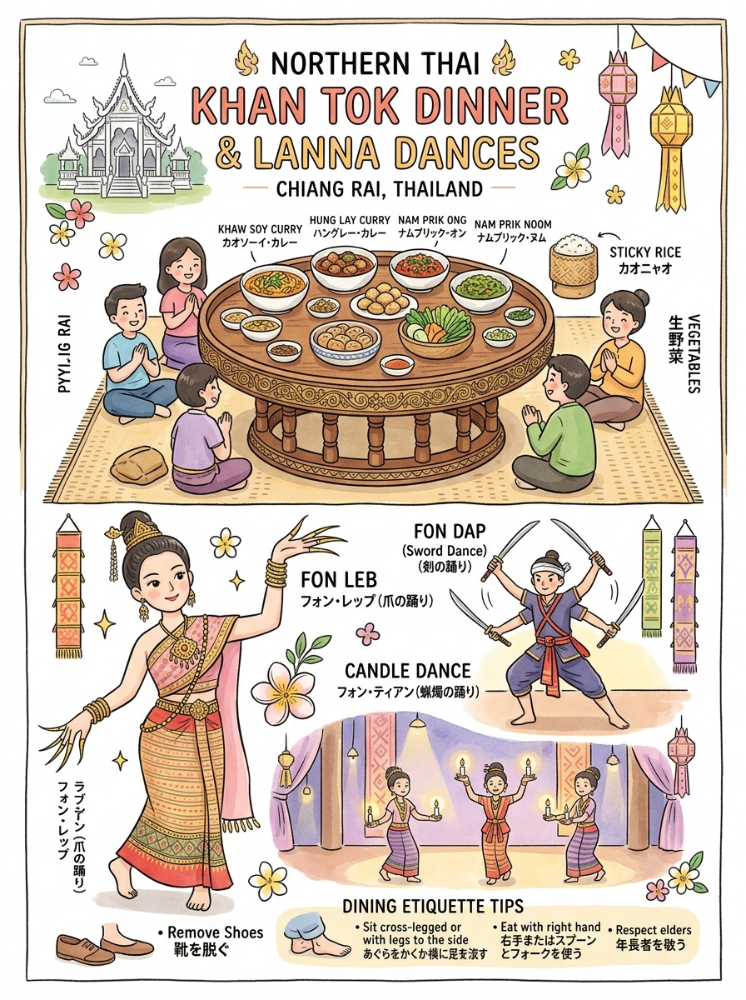
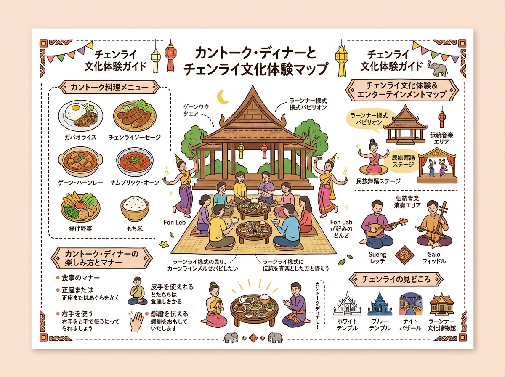

01
カントーク夕食会（全体様式・卓 / ขันโตก）
チーク材や竹・籐で作られた円形脚付小机「トーク」。高僧や貴賓をもてなす最高礼のランナー宮廷・冠婚葬祭饗宴様式。1953年にチェンマイで舞踊鑑賞とセットの宴として現代に復興。
小机（カントーク）を囲む伝統的な食事様式、出される料理の意味と踊りの鑑賞マナー。
クリックすると拡大して詳細を確認・印刷できます。

旅行者の持ち歩き・印刷に適した手書き風インフォグラフィック。

位置関係やルート、全体像を俯瞰できるワイドデザイン。
現地調査および公的データに基づく最新詳細情報。
チーク材や竹・籐で作られた円形脚付小机「トーク」。高僧や貴賓をもてなす最高礼のランナー宮廷・冠婚葬祭饗宴様式。1953年にチェンマイで舞踊鑑賞とセットの宴として現代に復興。
ビルマ由来の煮込み料理「ヒンレー」が起源。ココナッツミルクを使わず、豚肉・生姜千切り・タマリンド・ニンニク漬け・ウコン等でじっくり煮込んだ甘酸っぱく濃厚なカントークの主菜。
炭火で丸焼きにした青唐辛子（プリック・ヌム）とニンニクを叩き潰した爽快な辛味ディップと、サクサクに二度揚げした豚皮。ランナー食文化を象徴する黄金のコンビネーション。
レモングラス、コブミカンの葉、ガランガル、マクウェン（山椒）等の生ハーブと豚ひき肉を豚腸に詰め炭火で香ばしく焼いた名物ソーセージ。「ウア」はランナー語で「詰める」の意。
親指を除く8本の指先に長い真鍮製の黄金の付け爪を装着し、緩やかなランナー古典管弦楽に合わせて舞う宮廷舞踊の最高峰。仏陀への帰依と客への心からの歓迎を表現。
両手に火を灯した蝋燭を持ち、照明を落とした薄暗い会場で幻想的な光の軌跡を描きながら舞う夜間祝祭・宮廷儀礼舞踊。仏教の灯明供養に由来。
ランナー古武術（ラーイ・チエン）に由来する勇壮な武芸舞踊。最大12本以上の鋭い刀剣を両手・口・肩・膝・足先に乗せ、自在に操りながらアクロバティックに舞う護身・魔除けの舞。
古代の出陣式で兵士を鼓舞し勝利を宣言した軍鼓や寺院の大太鼓が起源。撥だけでなく肘・膝・頭・踵を使って全身で太鼓と銅鑼を打ち鳴らす躍動感あふれる民族芸能。